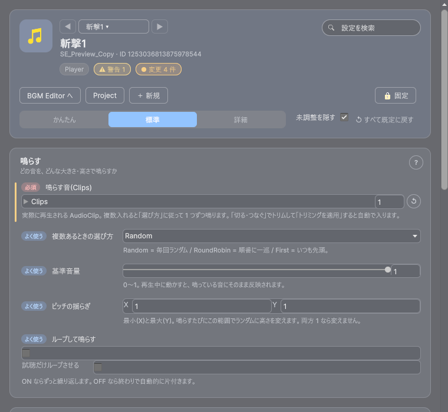
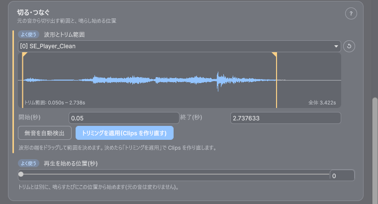
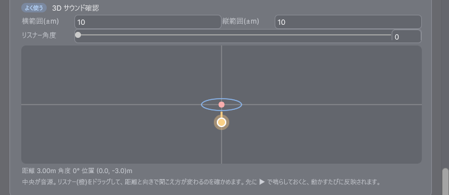
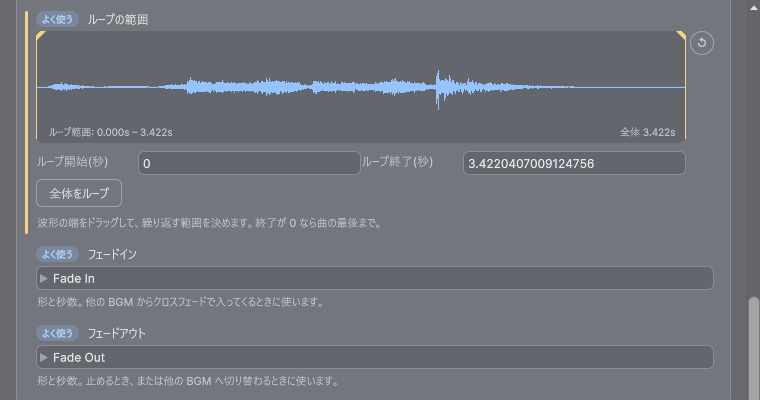

最終更新日: 2026-10-12
Audio Editor は、効果音（SE）と BGM を波形を見ながら・実際に鳴らしながら調整するウィンドウです。設定は「やりたいこと」ごとのカードに分かれています。できること:
Tools > D-Drive > Editors > Audio Editor、または SE / BGM データの Inspector の一番上にある「Audio Editor で開く」、または Asset Browser の行のダブルクリック。SE は SE 用の Audio Editor、BGM は BGM 用の Audio Editor が開きます（見た目と操作は同じ作りです）
| 部品 | 説明 |
|---|---|
| ◀ ▶ と名前のボタン | 同じカテゴリのデータを順に切り替えます。名前のボタンで最近使ったものも選べます。 |
| 設定を検索 | 欄の名前・説明・検索語に一致する設定だけを出します（例: トリム / 距離 / ミキサー）。×で解除。 |
| 警告・変更のチップ | 検証の警告数と、まだ保存していない変更の数。 |
| BGM Editor へ / SE Editor へ | SE と BGM の Audio Editor を切り替えます。 |
| Project | 対象アセットを Project ウィンドウでハイライト。 |
| ＋ 新規 | 新しい SE（BGM 用ウィンドウでは BGM）データを作ります。 |
| 固定 | ON にすると、Project ウィンドウで別のものを選んでも対象が切り替わりません。 |
| かんたん / 標準 / 詳細 | 見せる欄の量。かんたん=必須の欄だけ（音を入れて ▶ で聞くところまで）/ 標準=よく使う欄まで / 詳細=すべての欄。 |
| 未調整を隠す | 詳細モードで、既定値のままの設定をカードごとの「未調整の設定」に折りたたみます。 |
| ↺ すべて既定に戻す | 既定値と違う設定をすべて既定に戻します（確認あり。管理情報は対象外）。各欄の右の ↺ でその欄だけ戻せます。 |
| 操作 | 説明 |
|---|---|
| ▶ 再生 / ■ 停止 | ゲームを実行せずにその場で試聴します。実際のゲームと同じ仕組み（AudioManager / BgmManager）で鳴らすので、Clips が複数ある SE は設定した「選び方」（ランダム等）どおりに毎回選ばれます。▶ を連打するとランダム再生の確認ができます。再生中の ▶ は「やり直し」になります。 |
| リピート | ON にすると、鳴り終わるたびに自動でもう一度鳴らします。何度も ▶ を押さずに調整できます。 |
| 速度（SE のみ） | 再生のピッチ（0.1〜2 倍）。鳴っている音にもすぐ反映されます。右の「×1.0」を押すと等倍に戻ります。データには保存されません（保存したい高さの揺らぎは「ピッチの揺らぎ」欄）。 |
| 変更 N 件 / 保存 | まだ保存していない変更の数。「保存」でアセットに書き込みます（保存のたびに版数が進みます）。ウィンドウを閉じる・対象を切り替えるときに未保存があると確認が出ます。 |
| 自動保存 | ON にすると、編集が止まって 1 秒たつと自動で保存します（再生中でも）。 |
Ctrl+Z / Ctrl+Y で戻せます（波形のドラッグ 1 回は 1 回の取り消しにまとまります）。
どの音を、どんな大きさ・高さで鳴らすか。項目の意味は SE の設定項目 を見てください。
| 項目 | 説明 |
|---|---|
| 鳴らす音（Clips） | 実際に再生される音（必須）。複数入れると「選び方」に従って鳴ります。トリミングを適用すると自動で入ります。 |
| 複数あるときの選び方 | Random / RoundRobin / First。 |
| 基準音量 | 0〜1。鳴らしている最中に動かすと、その音にすぐ反映されます。 |
| ピッチの揺らぎ | 鳴らすたびに高さをランダムに揺らす範囲（X = 最小、Y = 最大）。両方 1 なら揺らしなし。 |
| ループして鳴らす / 試聴だけループさせる | 前者はデータに保存される設定。後者は ▶ のときだけループで鳴らして聞き続けるための確認用で、データは変わりません。 |
「素材の前後に無音が入っていて鳴り出しが遅れる」というときに使います。元のファイルは一切変更されない（非破壊）ので、何度でもやり直せます。

| 項目 | 説明 |
|---|---|
| 再生を始める位置（秒） | トリムとは別に、鳴らすたびにこの位置から始めます（元の音は変わりません）。データに保存されます。次の再生から反映されます。 |
| 項目 | 説明 |
|---|---|
| 出力先（Mixer） | 音の出力先グループ。未割当だと警告が出ます（欄の下に表示）。→ 用語集: Mixer |
| 3D の鳴らし方（Spatial） | None（2D）/ Anchor（くっつけて鳴らす）/ At Position（座標を渡して鳴らす）。None のままだと距離の設定は音に影響しません。 |
| フル音量の距離 / 聞こえなくなる距離 | Min / Max Distance（メートル）。聞こえなくなる距離は、フル音量の距離より大きくしてください（逆だとエラー表示）。 |
| 鳴る位置（詳細） | Spatial が Anchor のときの、くっつけ先からのずれ。上から見た四角のパッドをドラッグして前後左右（X/Z）を、右のスライダーで高さ（Y）を決めます。基準（World / ボーン名など）や向きは下の「位置の全設定」で。Spatial が Anchor でないとき、Anchor アセットを使っているときは、パッドが薄くなり理由が出ます。 |
| 共通の位置（Anchor）（詳細） | 位置を複数の Data で共有したいとき、Anchor アセットを指定します。「Anchor Editor で開く」で位置・ランダム・ディレイを調整、「埋め込みをアセット化」で今の位置から Anchor アセットを作って設定します。 |
| 距離による減衰カーブ / 音の広がり / ドップラー効果（詳細） | Rolloff / Spread / Doppler。普段は触らなくて大丈夫です。 |
「聞こえ方」カードの下の四角いエリアで、「音源から離れるとどう聞こえるか」を耳で確認できます。先に ▶ で鳴らしておいてから動かしてください。

| 要素 | 説明 |
|---|---|
| 赤い点（中央） | 音源の位置。固定です。 |
| 橙の点 | 聞く人（リスナー）の位置。ドラッグで自由に動かせます。再生中に動かすと、音量や左右の聞こえ方がリアルタイムに変わります。 |
| 橙の点から伸びる線 | 聞く人の向き。「リスナー角度」スライダーで回せます。向きを変えると左右の聞こえ方が変わります。ヘッドホン推奨。 |
| 青い円 | フル音量の距離（Min Distance）。この内側では最大音量。 |
| 橙の円 | 聞こえなくなる距離（Max Distance）。この外側では聞こえません。 |
| 横範囲 / 縦範囲（±m） | 四角いエリアが表す実際の距離（メートル）。遠距離の減衰を見たいときは大きく、近距離を細かく見たいときは小さく。 |
| 距離表示（下） | 音源から聞く人までの今の距離・角度・座標。 |
| 項目 | 説明 |
|---|---|
| 同時に鳴らせる数 | 超えたときは一番古い音から止めます。0 以下はエラー表示。 |
| 連打防止の間隔（秒）（詳細） | この時間内の再生要求は無視します。 |
| 動作の取り決め（詳細） | Pool 上限・ポーズ時の挙動・ネット配送など。 |
| 項目 | 説明 |
|---|---|
| 曲の本体（LoopBody） | 繰り返し流す曲（必須）。 |
| イントロ（任意） | 入れると、先にこれを流してから本体へ切れ目なくつなぎます。無音の状態から曲を始めたときだけ流れます。 |
| 基準音量 | 0〜1。 |
| 動作の取り決め（詳細） | ポーズ時の挙動・ネット配送など。 |
曲のどこからどこまでを繰り返すかを、波形で決めます。

| 項目 | 説明 |
|---|---|
| ループの範囲 | 波形の両端をドラッグするか、「ループ開始（秒）」「ループ終了（秒）」に数字で入れます。終了が 0（または曲の長さ以上）なら「最後まで」。「全体をループ」で開始 0・終了 0 に戻せます。開始より前の位置を終了にするとエラー表示になります。 |
| フェードイン | 他の BGM から切り替わってくるときの、入り方（形と秒数）。 |
| フェードアウト | 止めるとき、または他の BGM へ切り替わるときの、消え方（形と秒数）。 |
| 項目 | 説明 |
|---|---|
| 出力先（Mixer） | 音の出力先グループ（BGM 用グループを設定）。未割当だと警告が出ます。 |
| テンポ（BPM）（詳細） | 拍に合わせた演出に使います（任意）。 |
出現・終了などの節目で、別の SE / VFX などを一緒に鳴らす設定です（詳細モード）。
一覧に出る名前・カテゴリ・説明・タグ・アイコン・担当者・仕様書 URL・変更メモ。表示名とカテゴリ以外は詳細モードで出ます。いちばん下に Id・版数・最終更新者・最終更新日時が表示されます（編集はできません）。
設定の問題は、その欄の下に黄色（警告）・赤（エラー）で出ます。「修正」ボタンがあるものはワンクリックで直せます。どの欄にも当てはまらない結果は、いちばん下の「その他の検証」に出ます。ヒーローの警告チップで件数が分かります。